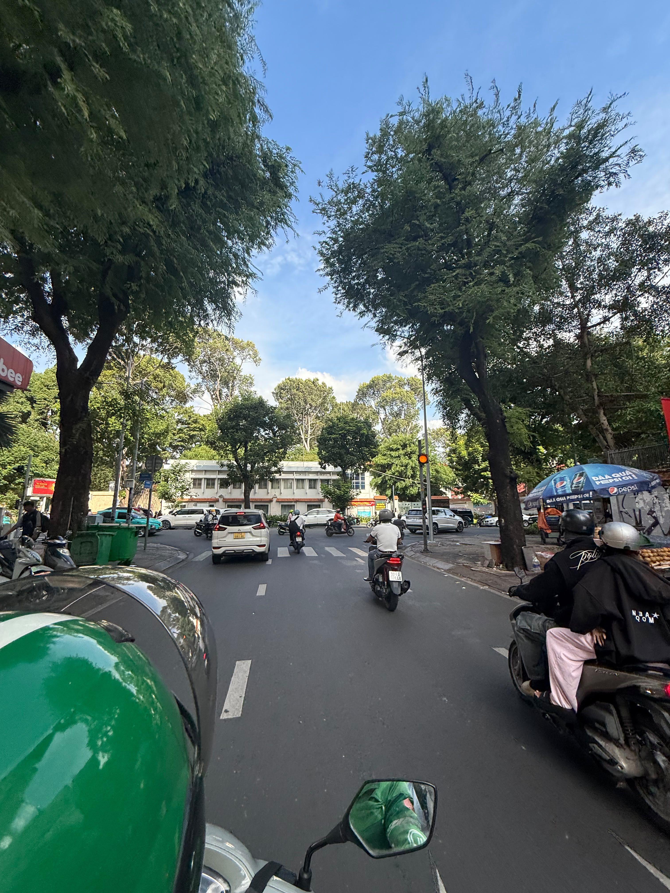
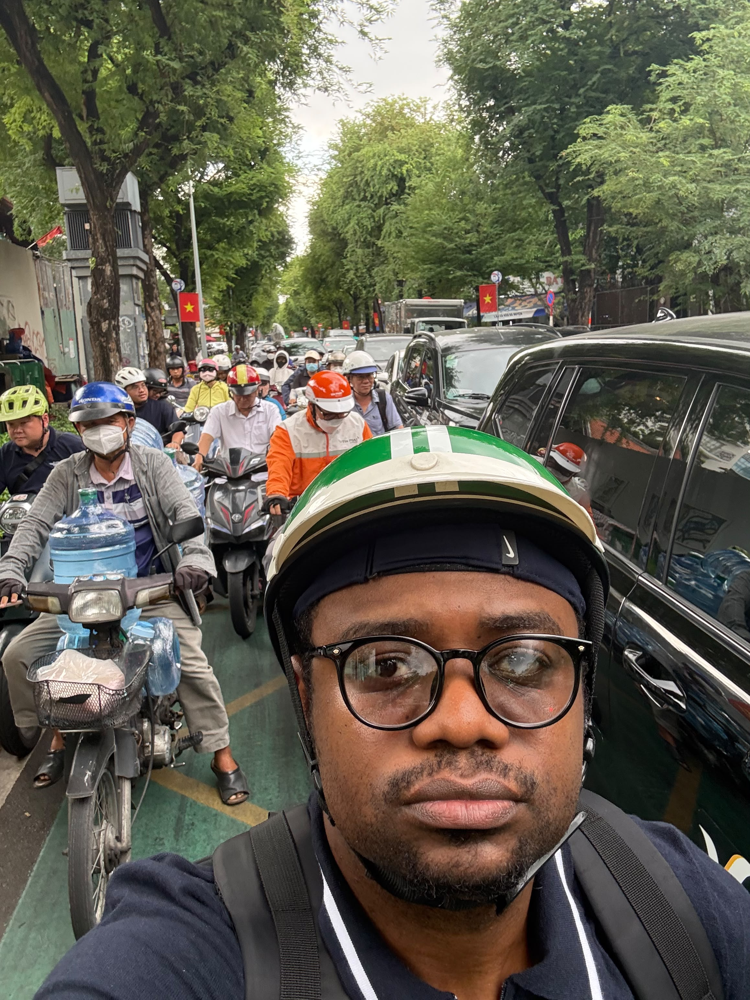
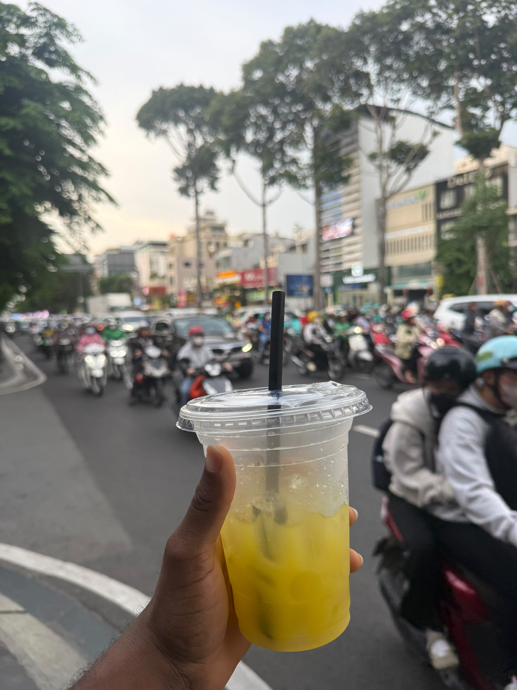
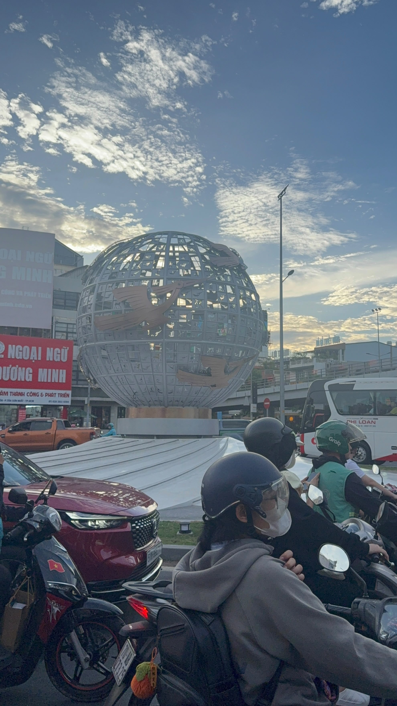

1. Motorbike Streets

Saigon has over 8 million motorbikes. Riding a Grab bike is an attraction itself.
Ho Chi Minh City, Vietnam - Planet Earth

Saigon, also called Ho Chi Minh City, is my favorite city because it is full of energy. There are millions of motorbikes, street food on every corner, and friendly people. I love the mix of old temples and new tall buildings.
For visitors, Saigon offers cheap and amazing food, cool history, and a real adventure just crossing the street. You can drink sugarcane juice, ride a Grab bike, and explore markets all day.

Saigon has over 8 million motorbikes. Riding a Grab bike is an attraction itself.

Saigon is paradise for street food. Sitting on small stools eating pho and drinking juice while watching traffic.

This big metal globe with birds at a busy roundabout shows maps from around the world. At sunset it looks amazing.
Ben Thanh Market is where you can buy everything from clothes to food. Very popular for tourists and near Circle K stores.